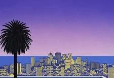
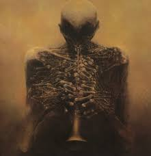

Művészet
Korunk
Szép
A Művészet
A művészet szét ágazó és sok formája van de a modern művészetekre ez hatványozottan igaz!
Napjainkban a művészet nem annyira össze egyezthető mint régen!
A modern művészet valójában káosz, minden lehet művészet egy fel borúló homokkal teli hordó vagy egy órákon át készített alkotás!
De za bisztos hogy a modern művészet lehet nagyon gyönyörű!

A modern művészet alapvetően a 19. század végi és a 20. századi művészeti irányzatokat jelöli, amelyek elhagyták a hagyományos művészeti normákat és új utakat kerestek a kifejezésmódban. A modern művészet célja az volt, hogy eltávolodjon a klasszikus, akadémikus stílusoktól, és reflektáljon a modern társadalom, technológia, ipari fejlődés és a gyors változások hatásaira.

A modern művészet egy elég elterjedt műfaj és számtalan zseniális alkotó van!
Néhány módszer a lustaság és a motiválatlanság leküzdésére!
- 1 Hirosi Nagai a csendéletek mestere (napjainkban)!
- 2 Zdzisław Beksiński hátborzongató és elgondolkodtató képeket készít (képei elvontak és félelmetesek de meg kérdőjelezhetetlenül fantasztikusak)!
- 3 Jonathan Solter a képeire valójában nem találok szavakat!
- 4 És egy legenta az én személyes kedvencem: Tatsuo Horiuchi ő excel csinál festményeket hihetetlen!
Hirosi Nagai

Zdzisław Beksiński

Jonathan Solter
.jpg)
Tatsuo Horiuchi
.jpg)
AI
Sokan azt gondolják hogy az AI művészete már meg előzte az emberekét de az AI nem művész nem tesz bele gondolatokat érzelmeket csak a kérések és minták alapján generál valamit!